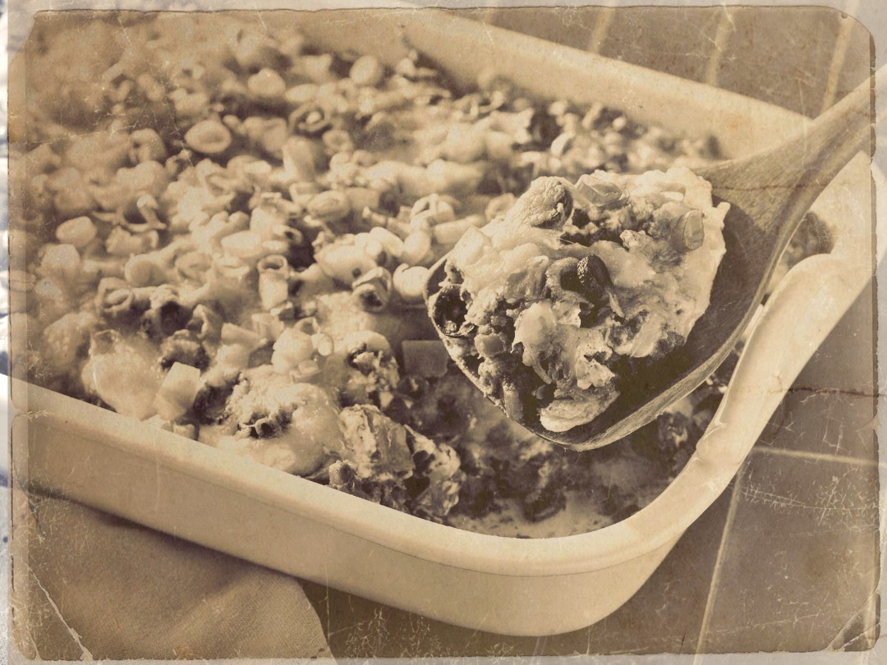

Cease Fire Casserole

Description:
If enough men get together to contribute Basic C-Rations, there will be
enough food to feed a squad.
(*This is from your Basic C-Ration)
Ingredients:
-
Three spoons chopped green onions
-
Two spoons butter or oil or fat
-
Two spoons flour
-
Four spoons bean sprouts
-
*One can beefsteak with juices
-
*One can spiced beef with sauce
-
Three drops TABASCO pepper sauce
-
*Salt and pepper to taste
-
Two cans water (using can from spiced beef as a measuring cup)
-
One spoon soya sauce
Instructions:
-
Melt butter or oil or fat in skillet. Saute green onions and bean sprouts
for a few minutes. Sprinkle flour and mix until well blended. Add one can
of water, a little at a time, until sauce is thickened.
-
Transfer the mixture to a steel helmet or other cooking utensil and add the
beefsteak with juice, the spiced beef with sauce and the second can of water.
Cook slowly til all ingredients are well blended and the sauce is good and
thick.
-
Serve the casserole over boiled rice or sprinkle the casserole with crumbled
crackers just before serving.